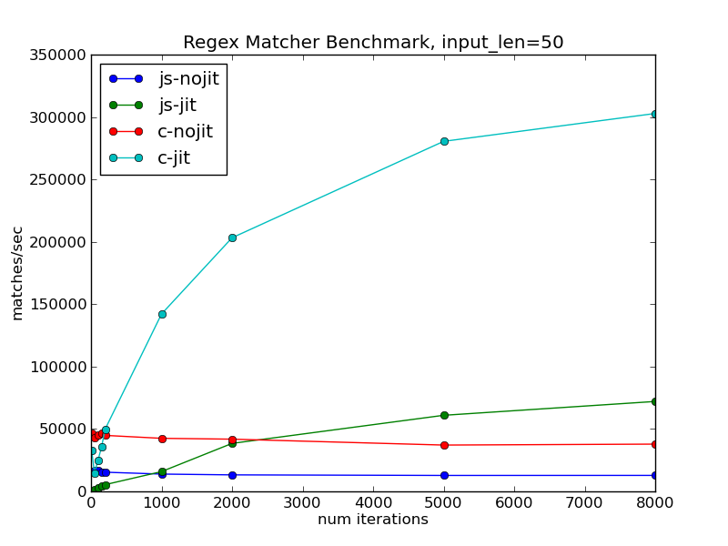
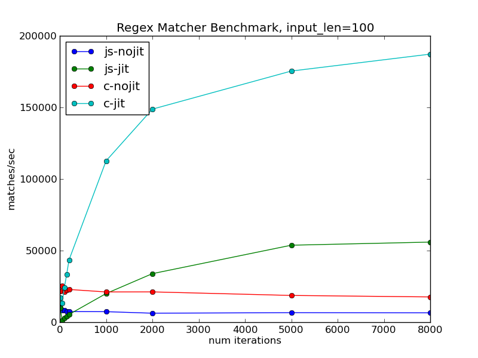
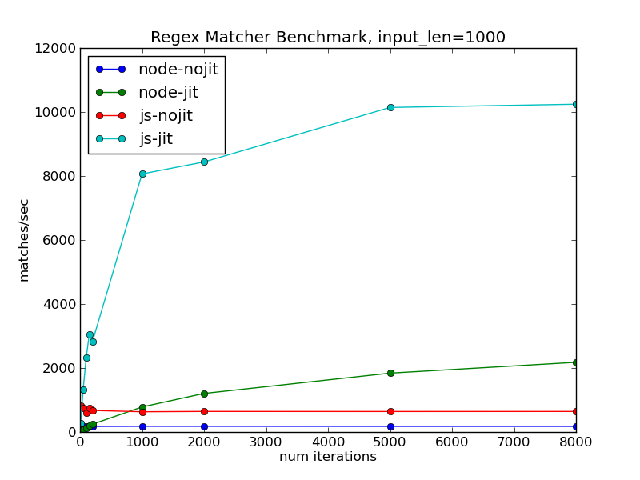

PyPy.js Update: A Proof-of-Concept JIT
Two weeks ago I hatched a plan to port Python to the Web Platform by using Emscripten to translate PyPy into JavaScript. My hope is to produce something than can run in the browser with performance comparable to a standard Python interpreter, a hope which hinges on two key ingredients:
- PyPy's powerful just-in-time compiler, which can optimize the hot loops of your program into efficient native code.
- The recent work on asm.js, a low-level subset of JavaScript that can act like an efficient virtual machine in the browser.
By translating the PyPy interpreter into asm.js code, and by having its JIT backend emit specialized asm.js code at runtime, it should theoretically be possible to have an in-browser Python implementation whose hot loops perform within a factor of two of native code.
I'm excited to report a small but important milestone on the road to making this a reality.
It's certainly not a full Python interpreter, and it comes with many caveats and question-marks and todos, but I have been able to produce a simple demo interpreter, with JIT, that approaches the theoretical factor-of-two comparison to native code under some circumstances. There's a long way to go, but this seems like a very promising start.
TL;DR? Feel free to jump straight to the important graph.
The inspiration for this project was the article A JIT for Regular Expression Matching by PyPy developer Carl Friedrich Bolz. It demonstrates how to use the PyPy interpreter-building toolchain to generate a simple regular-expression matcher, and how to plug in PyPy's JIT compiler to give it a free speed boost.
My test code, adapted from that article, is available here: rematcher.py.
Essentially this file is a small "interpreter" for regular expressions, written using the same RPython toolchain as the full PyPy interpreter. I will highlight a couple of details below, but please see the linked article for a full explanation, it is well worth the read.
The program's internal state is a tree of objects that represent a particular regular expression, and it matches input strings by feeding them into this tree one character at a time. The main loop of the "interpreter" looks like this:
def match(re, s):
"""Match input string 's' against the given Regex object."""
# Empty strings only match empty regexes.
if not s:
return re.empty
# Feed each character into the regex.
result = re.shift(s[0], 1)
i = 1
while i < len(s):
result = re.shift(s[i], 0)
i += 1
# Reset the regex to be used on the next string.
re.reset()
return result
For benchmarking purposes, I wrapped this in a little test harness that creates a fixed regex object, generates 1000 random input strings, and runs them all through the match() function. Using the JavaScript backend for RPython from my previous post, this can be translated into JavaScript and run under the SpiderMonkey command-line shell like so:
$> rpython --backend=js --opt=2 ./rematcher.py
[...lots and lots of compiler output...]
$>
$> js ./rematcher-js
warning: successfully compiled asm.js code (total compilation time 203ms)
Generating 1000 strings of length 50 ...
Matching all strings against the regex...
Done!
Matching time for 1000 strings: 0.083000
Performed 12048.200800 matches per second.
$>
The key output here is "matches per second", which gives the mean time taken to match a string against the regex. Higher numbers are better, and we'll be looking at this metric a lot.
To speed things up, I implemented a very basic asm.js JIT backend for RPython. The code is on my github fork of PyPy and is far from complete – it implements just enough of the RPython JIT functionality to successfully run this example.
From the point-of-view of our regex interpreter, we need only add a couple of hints to enable the JIT compiler. Specifically, we have to mark the entry-point of its main loop, like so:
jitdriver = jit.JitDriver(reds="auto", greens=["re"])
def match(re, s):
if not s:
return re.empty
result = re.shift(s[0], 1)
i = 1
while i < len(s):
jitdriver.jit_merge_point(re=re) # <-- like this
result = re.shift(s[i], 0)
i += 1
re.reset()
return result
This annotation does not affect the semantics of the code, but it tells RPython to generate all the extra hooks and control-flow to enable just-in-time compilation over this loop. Again, please see the original article for all the details. When compiled with this JIT backend enabled, the following will happen:
- The matcher will start running normally, but the JIT machinery will keep track of how many times the marked loop is executed.
- Once the execution count passes a certain threshold, the matcher will run for a single iteration in "tracing mode" to record each low-level operation that it performs.
- The JIT machinery analyzes and optimizes the trace, and passes it into my new asm.js JIT backend.
- The JIT backend renders the trace into a string of asm.js source code and invokes "new Function()" to compile it.
- Subsequent iterations of the loop execute the new specialized function rather than the generic matcher code.
Here's the result:
$> rpython --backend=js --opt=jit ./rematcher.py
[...even MORE compiler output...]
$>
$> js rematcher-js
warning: successfully compiled asm.js code (total compilation time 1450ms)
Generating 1000 strings of length 50 ...
Matching all strings against the regex...
rematcher-jit.js:1827:0 warning: successfully compiled asm.js code (total compilation time 2ms)
rematcher-jit.js:1827:0 warning: successfully compiled asm.js code (total compilation time 0ms)
Done!
Matching time for 1000 strings: 0.078000
Performed 14705.865441 matches per second.
$>
Notice two additional lines about "successfully compiled asm.js code" when compared to the non-JIT version. This is the JIT machinery generating and compiling additional asm.js code at run-time.
The JIT-compilation does indeed result in a speedup for this test, but frankly it's pretty modest.
For comparison, here is the output produced by the non-JIT version when compiled into native code rather than JavaScript:
$> rpython --backend=c --opt=2 ./rematcher.py
[...yet more compiler output...]
$>
$> ./rematcher-c
Generating 1000 strings of length 50 ...
Matching all strings against the regex...
Done!
Matching time for 1000 strings: 0.036899
Performed 27100.939483 matches per second.
$>
And the JIT-enabled version:
$> rpython --backend=c --opt=jit ./rematcher.py
[...yet more compiler output...]
$>
$> ./rematcher-c
Generating 1000 strings of length 50 ...
Matching all strings against the regex...
Done!
Matching time for 1000 strings: 0.008123
Performed 123108.423833 matches per second.
$>
Yikes! The JIT-enabled native version produces 123,000 matches per second, compared to a measly 14,000 for the JIT-enabled JavaScript version. It might seem like the asm.js JIT backend is not living up to its promise. But these individual numbers are not the whole story.
JIT compilation can be a delicate tradeoff in practice. The code spends more time up-front in order to monitor, trace, and compile frequently-executed loops, but we expect that this time will be more than compensated for by the increased performance of the compiled code. How much of the performance difference here is due to JIT compilation overhead, and how much to the performance of the generated code itself?
One simple way to determine this is to just run the program for longer. The performance cost of the JIT compilation is fixed, and doing more iterations of the loop lets you extract proportionally more benefit from that cost. Here is how the matches/second numbers look for a range of different running times:

As expected, the performance of the non-JIT versions is essentially constant regardless of the number of iterations. Both JIT-enabled versions start off performing worse than their respective counterparts, since they don't run for long enough to pay back the costs of compilation. But the matches/second figure steadily improves as the cost of compilation is amortized over more and more iterations.
The JavaScript version still lags mightily behind the native one here, but there is a bright point on this graph – if it runs for long enough to pay back the warmup costs, the JIT-enabled JavaScript version runs faster than the non-JIT native version.
(By the way, the code for running and graphing these benchmarks is here: jitbench.py)
There's a second knob we can twist on this particular test: the length of each individual string that is fed into the matcher. When the input strings are longer, the program will spend proportionally more of its time inside the main loop, rather than in the test harness or other supporting code.
Increasing the string length from 50 to 100 gives the following:

The number of matches/second has decreased, simply because it's now matching against longer strings. But the decrease is not proportional to the increase in string length. In both native and JavaScript versions, the program is spending proportionally more of its time inside JIT-compiled code, and so extracting proportionally more value out of its fixed compilation overheads.
If we go all-out and try it on strings of length 1000, we get the following very exciting graph:
The right-hand side of this graph has flatlined, indicating that almost all of the program's runtime is spent in the JIT-compiled code. It is essentially comparing the raw performance of the generated code between the native and JavaScript versions. We can conclude two interesting things from this graph:
- The JIT-compiled asm.js code is indeed within a factor of two of the performance of native code.
- The JIT-compilation overheads are significantly higher in the JavaScript version, as this limit is reached only after many iterations.
It's a promising start. Compilation overheads I can work on and chip away at over time; raw performance of the generated code I can't do much about.
To round out the comparison, here is a similar graph showing the SpiderMonkey JavaScript shell against the current release version of node-js:

This really highlights the difference made by SpiderMonkey paying special attention to asm.js code. The node-js version still sees a performance improvement, but it is much less and grows at a much slower rate. It would be interesting to compare the latest version of V8 here as well; I simply haven't got around to that yet.
It's really pretty neat to consider the kind of nested interpretation and optimization that is taking place here:
- The host JavaScript interpreter is running the code for another interpreter, to which it is applying its usual host-level JIT tracing and optimization routines
- The hosted interpreter is in turn running its own "program" in the form of a regular expression, and is tracing and monitoring its execution.
- When the hosted interpreter detects a hot loop, it triggers a JIT compilation to produce new JavaScript and feeds it up into the host interpreter.
- The host interpreter in turn will recognize this as hot code and JIT-compile it down to optimized machine code.
You'll pardon me if I can't resist a bit of a meme:
So where to from here?
There's certainly a long road still to travel before these preliminary results can apply to a full python interpreter. In roughly the order I plan to work on them, the next steps for PyPy.js will be:
- Implementing support for more JIT opcodes. This includes a lot of trickier things like garbage-collection, guard invalidation, and calling back into functions in the interpreter.
- Improving the performance of non-JIT code. I suspect there's low-hanging fruit here, especially with regards to memory-management.
- Making it run in the browser. Hopefully I can lean on the awesome work done by projects like Skulpt and Brython in producing a friendly and familiar interpreter interface.
All that said, I'm feeling pretty optimistic about the possibilities here. There's a lot of interesting performance work being done in the JavaScript world at the moment, and the PyPy developers continue to churn out new features and speedups. If I can keep plugging away at the intersection of the two, a highly-performant in-browser Python doesn't seem too far-fetched.